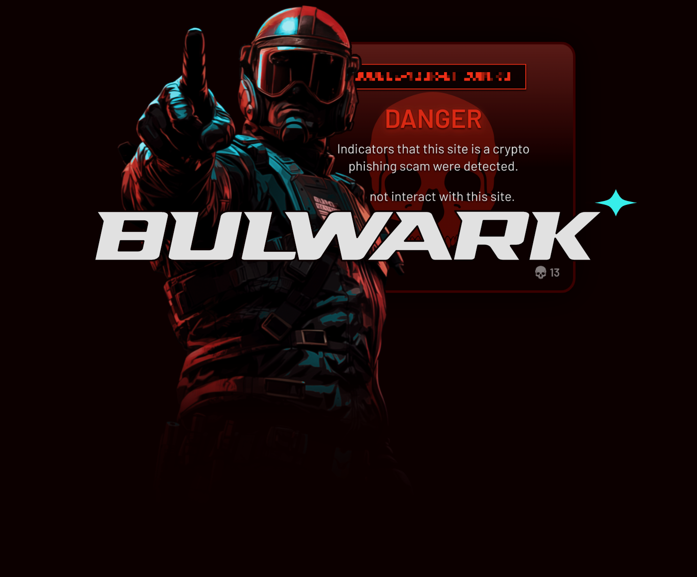

The Security UX Studio
Protspec helps cryptonatives interact with blockchain ecosystems safely through design, technology, and education.

Bulwark by Protspec is a browser extension that detects crypto scam websites. By combining code analysis with domain blocklists, Bulwark can differentiate legitimate websites from crypto scams and warn you when you are about to face danger.
Why Bulwark?
Most wallets and security browser extensions rely on blocklists of existing malicious domains to protect their users. But this is a poor solution on its own, as these lists depend on manual processes for domains to be added to them. By the time this process has completed for a domain, thousands of dollars have likely flowed from victims' wallets, perhaps yours, to the scammer.
Bulwark uses open-source domain blocklists as just one method to protect cryptonatives. When blocklists fail, Bulwark will analyze your current website’s domain and code for patterns that match crypto scam websites. This pattern-matching is finely tuned so Bulwark can detect bespoke scam websites, not just those using a pre-existing kit.
Security UX Studio
Protspec has over 15 years of experience across product design, front-end web development, and information security.
As a multi-disciplinary studio, Protspec can work with your team to design new security UX patterns and interfaces, or audit existing ones. This results in hardening your users’ operational security and reducing their chances of making costly mistakes while using your product or protocol.
What Can Protspec Do?
- Identify vulnerable UX patterns that can be abused by malicious actors to trick your users into performing dangerous actions
- Highlight ambiguous UX patterns that could confuse your users and prevent them from reaching desired outcomes
- Conduct QA testing to identify UX interfaces that may be performing incorrectly, and provide steps for remediation
- Redesign UX patterns or interfaces to address the issues above, while providing better clarity and consistency to your users
About
Protspec is the security UX studio by d0wnlore, a founding member of BanklessDAO's InfoSec Team. Outside of Protspec he helps other cryptonatives stay safe through his security education writing in IndyPen CryptoMedia, Bankless Academy and X.
With a decade of exposure to blockchain ecosystems, starting with Bitcoin ATMs and in-person payments, d0wnlore has an understanding of the UX and security pain points that still persist. Frustrated by the industry's lack of effective answers to crypto scams, he started Protspec to make blockchain ecosystems safer and less intimidating for cryptonatives.
d0wnlore was previously a penetration tester in TradFi. Before that, he dual-wielded product design and front-end web development duties at various tech startups. He is likely the only OSCP-certified UX designer you will ever meet.